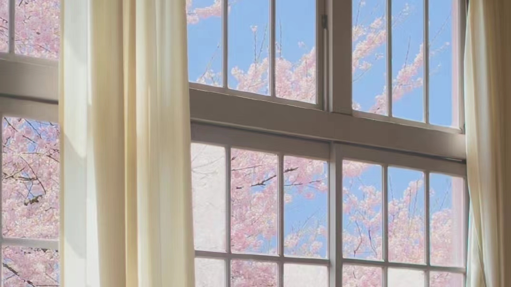
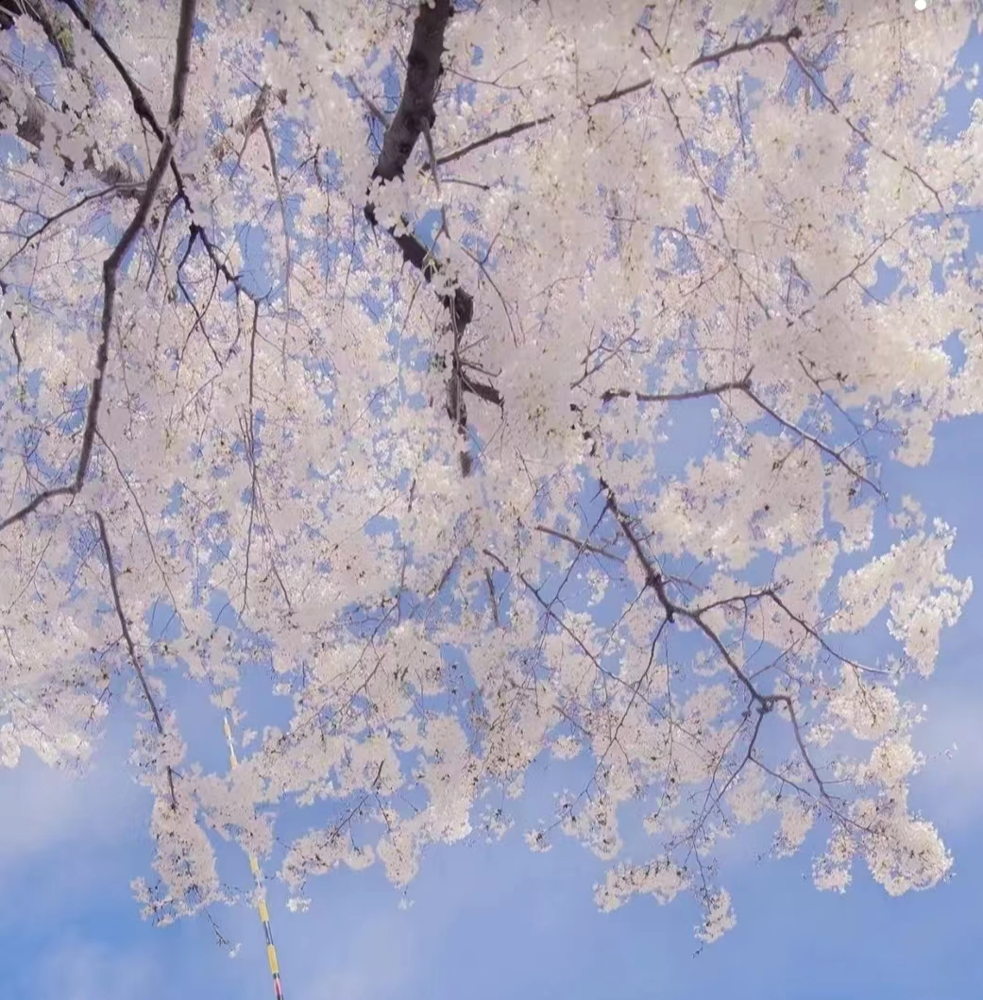
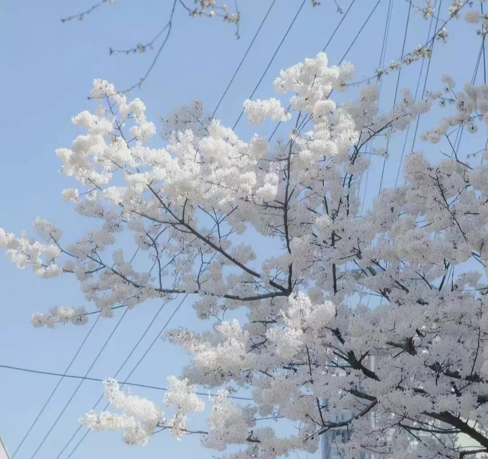

Welcome to my world!
莫听穿林打叶声，何妨吟啸且徐行。 竹杖芒鞋轻胜马，谁怕？一蓑烟雨任平生。
料峭春风吹酒醒，微冷，山头斜照却相迎。 回首向来潇瑟处，归去，也无风雨也无晴。


***自我介绍***
学生学历：中南财经政法大学（本科）
入学年份：2021.9
学生学院：信息与安全工程学院
学生专业：信息管理与信息系统
姓 名 ： 谢煜
学 号 ： 202121130228
兴趣爱好：
喜欢听音乐、看小说；
喜欢毛茸茸的小动物；喜欢美丽的花花草草；
爱旅行，最喜欢烟雨朦胧的江南，以后希望能在此定居。
我来自湖北省，是2004年3月出生的。本人性格开朗，很喜欢结交朋友。我兴趣涉猎广泛，听音乐、看电影、读小说、追星都是我平时爱做的事。
在音乐方面，我听歌的类型也有很多。疲惫时听轻音乐，《金风玉露》《蝶梦花雾雨》是我常听的纯音乐。初中的时候沉迷古风圈，对当时流行的古风音乐都很喜欢；高中时又对欧美圈的音乐很感兴趣，加上有高中同学都在许多追欧美歌手，那段时间便对欧美音乐的了解更深一些。到了大学之后，生活节奏变快，我更爱重鼓点的舞曲，加上大学沉迷看美女的舞台，于是便入坑了kpop，成为了一名追星人。
虽说对古风音乐的喜好不如初中时的热爱，但我对诗词的喜爱仍然不减分毫。不同于初高中时期只浅浅背出整篇诗句，囫囵吞枣地接受知识，我现在更偏向于从一首诗词中去了解诗人背后发生的故事。最近播出的一档纪录片《中国》就有关于诗词对于中国文化影响的解说，在观看完这些之后，我对诗词的理解也更上一层楼。
